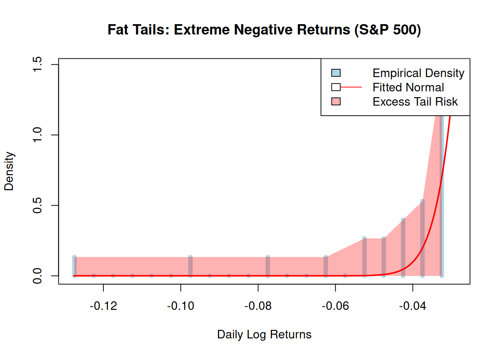

set.seed(123)
runif(10, 0, 1) [1] 0.2875775 0.7883051 0.4089769 0.8830174 0.9404673 0.0455565 0.5281055
[8] 0.8924190 0.5514350 0.4566147In this lecture we will introduce the most important probability distribution, the normal distribution. While we have discussed discrete random variables so far, where the number of possible outcomes for \(X\) is finite (or countably infinite), to discuss the normal distribution we need to deal with the case that the number of outcomes for \(X\) is uncountable infinite, or a continuum. This leads us to the concept of a continuous random variable.
Here, we discuss the most important concepts for practical work with continuous random variables. For a mathematically rigorous treatment, advanced techniques such as measure theory are required. However, we will not delve into those here (see, for example, @Billingsley1995). Instead, we focus on applied and practical aspects.
A continuous random variable \(X\) can take on a continuum of possible values within a given range.
Random variables that can take on a continuum of values, rather than discrete values like the fair coin we discussed earlier, play a crucial role in practical applications. For instance, consider asset prices or returns. A stock’s price, in principle, could take any value in \([0, \infty)\). Or could it?
This is a modeling assumption that can be debated in terms of realism. After all, stock prices are quoted in currency, which has a smallest unit (e.g., cents or pennies). In Lecture 1, we discussed the assumption of unbounded stock prices in the context of sample spaces. Similarly, for other practical cases—such as task completion times, lengths, or weights—a continuum of outcomes often provides a natural model.
You might argue that these examples are not truly continuous. For instance, time is measured in hours, minutes, or seconds. However, we can refine our measurements to a much finer scale, with the limit imposed only by our measuring instruments. Time itself is continuous—it does not jump.
In contrast, stock prices do have a smallest monetary unit (e.g., cents in the Eurozone). Yet, for practical modeling, treating prices as continuous simplifies computations and analysis.
Even without delving into the mathematical machinery of measure theory, it is crucial to grasp the implications of continuous random variables. Let’s explore an example of a continuous random variable that can take any value in the interval \([0,1]\). In R, we can generate such numbers easily using the runif() function. Consider the following example:
set.seed(123)
runif(10, 0, 1) [1] 0.2875775 0.7883051 0.4089769 0.8830174 0.9404673 0.0455565 0.5281055
[8] 0.8924190 0.5514350 0.4566147Now, consider the probability of this random variable taking on a specific value, say \(0.4566147\), one of the values in our list. To investigate, we simulate one million uniformly distributed random numbers in \([0,1]\) and calculate the relative frequency of \(0.4566147\) occurring:
uniform_rv <- runif(10^6, 0, 1)
mean(uniform_rv == 0.4566147)[1] 0The result is zero—literally zero. Even with one million draws, the random number generator in R produced unique values each time. The probability of hitting any specific value is zero.
This occurs because the interval \([0,1]\) contains an infinite number of points. For any number in this interval, there are infinitely many numbers both larger and smaller. Assigning a positive probability to any single point would result in probabilities summing to a value greater than 1, violating the laws of probability.
For every continuous random variable \(X\), we have \(P(X = x) = 0\) for all \(x\).
This is a fundamental shift from discrete random variables: for continuous random variables, we cannot assign positive probabilities to individual points. Instead, probabilities are associated with intervals of real numbers.
For example, consider the probability that a uniformly distributed random variable \(X \sim U[0,1]\) takes a value between \(0\) and \(1/4\). Using the simulated numbers, we calculate:
mean(0 <= uniform_rv & uniform_rv <= 1/4)[1] 0.250841The result is 25%, as expected. Using R’s cumulative distribution function (CDF), we confirm:
punif(1/4)[1] 0.25For continuous random variables, probabilities are represented as areas under a curve. This is the major distinction from discrete random variables, where probabilities are assigned to individual points.
Consider this density function example:
Mathematically, these areas are calculated using integrals. The probability density function (PDF) describes the distribution as follows:
For a continuous random variable \(X\) with density function \(f(x)\):
The cumulative distribution function (CDF) provides another essential tool for continuous random variables:
The cumulative distribution function (CDF) shows the probability that \(X\) takes a value less than or equal to \(x\):
\(F(x) = P(X \leq x)\).
For any \(a < b\):
\(P(a < X < b) = F(b) - F(a) = \int_a^b f(x) \, dx\).
This transition from discrete points to areas under a curve marks a crucial conceptual shift in working with continuous random variables.
The normal distribution is perhaps the most iconic and fundamental probability distribution in all of probability theory. Its bell-shaped curve has become synonymous with ideas of natural variability and randomness. From the heights of people to measurement errors, and from stock returns to the central limit theorem, the normal distribution underpins countless phenomena in the natural and social sciences.
What makes the normal distribution truly remarkable is its simplicity and universality. With just two parameters—the mean (\(\mu\)) and variance (\(\sigma^2\))—it captures the essence of variability in a way that is mathematically elegant and empirically ubiquitous. This distribution lies at the heart of probability theory, serving as the cornerstone for much stochastic modeling. For the application of probability to the modelling of data, the field of statistics, the normal distribution is foundational.
The normal distribution is a continuous probability distribution that is centered around the mean, bell-shaped, symmetric, and completely determined by two parameters: the mean \(\mu\) and the variance \(\sigma^2\). The notation is \(X \sim N(\mu, \sigma^2)\). Its probability density function is given by: \[ f(x, \mu, \sigma) = \frac{1}{\sigma \sqrt{2 \pi}} \exp\left(-\frac{(x - \mu)^2}{2 \sigma^2}\right) \]
Often referred to as the Gaussian distribution, after the German mathematician Karl Friedrich Gauss (1777–1855), it is also known as the Gauss-Laplace distribution, honoring Pierre-Simon Laplace (1749–1827). The shape of its probability density function has earned it the nickname bell curve, an image deeply ingrained in the language of science, education, and beyond.
Let’s use R to make this image tangible.
# Set up the sequence of x values
x <- seq(-4, 4, length.out = 1000)
# Compute the probability density function of the standard normal distribution
y <- dnorm(x)
# Create the plot
plot(x, y, type = "l", lwd = 2, col = "blue",
main = "The Bell Curve: Standard Normal Distribution",
xlab = "Value", ylab = "Density")
grid()
The code above demonstrates how to create a simple visualization of the bell curve for the standard normal distribution using base R. Here’s a breakdown of the key steps:
We first define a range of values: The seq() function generates a sequence of values for the x-axis. In this case, it creates 1,000 equally spaced values between -4 and 4, which is sufficient to capture the central shape of the bell curve.
In a second step we compute the density.The dnorm() function computes the probability density of the standard normal distribution at each value in the sequence. If the mean and standard deviation are not explicitly specified in dnorm(), the function assumes the standard normal distribution by default, with a mean of 0 and a standard deviation of 1This function is part of a family of functions for working with random variables in R: - dnorm(x) computes the density at x. - pnorm(x) computes the cumulative distribution function at x. - qnorm(p) gives the quantile for a given probability p. - rnorm(n) generates n random samples from the normal distribution.
We need not discuss the basic syntax of the plotting function once more at this stage, because by now we have often done so.
One of the most powerful properties of the normal distribution is the ability to standardize it. By transforming any normally distributed random variable into a standard form, we unlock the ability to compare and analyze data across scales and contexts.
The standard normal distribution is a normal distribution with a mean \(\mu = 0\) and variance \(\sigma^2 = 1\). Any normally distributed random variable \(X\) with mean \(\mu\) and variance \(\sigma^2\) can be rewritten as a standard normal random variable \(Z\) using the transformation: \[ Z = \frac{X - \mu}{\sigma} \] By definition, \(Z \sim N(0,1)\).
Here’s a draft for discussing the probability mass within 1, 2, and 3 standard deviations of the mean for the normal distribution, along with its significance:
One of the most useful properties of the normal distribution is that it has a predictable concentration of probability mass around the mean. This is often summarized by the 68-95-99.7 rule, which states:
This property is not only fundamental to understanding the normal distribution but also provides a quick and intuitive way to interpret variability in data, regardless of the units of measurement.
Why Is This Important?
Universal Applicability:
The percentages remain the same no matter the scale or units of the data. For instance, whether we measure test scores, heights, or stock returns, this property holds for all normally distributed data.
Quick Validation of Normality: The 68-95-99.7 rule provides a straightforward diagnostic tool for assessing whether a dataset is approximately normal. If the proportions of data falling within 1, 2, and 3 standard deviations deviate significantly from these benchmarks, it is a strong indicator that the data may not be normally distributed.
Practical Insight:
It allows us to quickly assess how “unusual” a value is. For example:
Decision-Making:
This rule aids in many practical applications, such as quality control, where v alues falling outside of 3 standard deviations might indicate defects or anomalies. Similarly, in finance, it helps in risk assessment by estimating the likelihood of extreme losses or gains.
To illustrate this property, we can plot the standard normal distribution and shade the areas corresponding to 1, 2, and 3 standard deviations from the mean.
# Define the x-axis range and density
x <- seq(-4, 4, length.out = 1000)
y <- dnorm(x)
# Create the plot
plot(x, y, type = "l", lwd = 2, col = "blue",
main = "The 68-95-99.7 Rule",
xlab = "Standard Deviations from the Mean", ylab = "Density")
# Add shaded areas with distinct colors
# Shade 3 SD region first (light pink)
polygon(c(-3, seq(-3, 3, length.out = 100), 3),
c(0, dnorm(seq(-3, 3, length.out = 100)), 0),
col = "#FBB4AE", border = NA)
# Shade 2 SD region (light green)
polygon(c(-2, seq(-2, 2, length.out = 100), 2),
c(0, dnorm(seq(-2, 2, length.out = 100)), 0),
col = "#CCEBC5", border = NA)
# Shade 1 SD region (light blue)
polygon(c(-1, seq(-1, 1, length.out = 100), 1),
c(0, dnorm(seq(-1, 1, length.out = 100)), 0),
col = "#B3CDE3", border = NA)
# Redraw the outline of the curve on top for clarity
lines(x, y, lwd = 2, col = "blue")
# Add legend positioned middle-left at y = 0.2
legend(-4, 0.2,
legend = c("68% (1 SD)", "95% (2 SDs, includes 1 SD)", "99.7% (3 SDs, includes 1 & 2 SDs)"),
fill = c("#B3CDE3", "#CCEBC5", "#FBB4AE"),
border = NA, box.lty = 0, bg = "white", x.intersp = 0.5, y.intersp = 1.5)
To confirm these proportions, we compute the probabilities using R’s cumulative distribution function (pnorm):
# Probabilities for 1, 2, and 3 standard deviations
p1 <- pnorm(1) - pnorm(-1) # ~68%
p2 <- pnorm(2) - pnorm(-2) # ~95%
p3 <- pnorm(3) - pnorm(-3) # ~99.7%
cat("Probability within 1 SD: ", p1, "\n")Probability within 1 SD: 0.6826895 cat("Probability within 2 SDs: ", p2, "\n")Probability within 2 SDs: 0.9544997 cat("Probability within 3 SDs: ", p3, "\n")Probability within 3 SDs: 0.9973002 These results reinforce the importance of the 68-95-99.7 rule as a tool for interpreting data variability and making informed decisions.
While the normal distribution models many natural and financial phenomena, it is not always suitable for modeling certain quantities—such as stock prices—that are constrained to be positive. This is where the lognormal distribution becomes essential. It serves as a natural model for variables that are strictly positive and exhibit multiplicative growth, such as asset prices in financial markets.
A lognormal random variable \(Y\) is one whose natural logarithm is normally distributed. If \(X \sim N(\mu, \sigma^2)\), then \(Y = \exp(X)\) follows a lognormal distribution. The probability density function of \(Y\) is given by: \[ f(y, \mu, \sigma) = \frac{1}{y \sigma \sqrt{2 \pi}} \exp\left(-\frac{(\ln y - \mu)^2}{2 \sigma^2}\right), \quad y > 0. \]
Stock prices, by their nature, cannot fall below zero and often grow in a multiplicative manner over time. If the logarithm of a stock price follows a normal distribution, then the stock price itself is lognormally distributed. This aligns with the widely used geometric Brownian motion model This aligns with the widely used geometric Brownian motion model for stock price dynamics.1
In finance, returns are a natural way to measure changes in stock prices over time. Remember that for a discrete time interval, the return is defined as: \[ R = \frac{S_t - S_0}{S_0}, \] where \(S_0\) is the initial price and \(S_t\) is the price at time \(t\). However, this formulation has limitations for very short time intervals or when returns are compounded over time.
Instead, logarithmic returns (or continuously compounded returns) are defined as: \[
r = \ln\left(\frac{S_t}{S_0}\right).
\] This definition arises naturally because it allows for: 1. Additivity in Continuous Time:
Over small time intervals, the log of cumulative returns adds up, making it easy to model and sum returns over time. For instance, if a stock moves from \(S_0\) to \(S_t\) and then to \(S_T\), the total log return is: \[
r = \ln\left(\frac{S_t}{S_0}\right) + \ln\left(\frac{S_T}{S_t}\right) = \ln\left(\frac{S_T}{S_0}\right).
\] This property simplifies modeling in continuous time frameworks.
Consistency with Compounding:
Financial returns often compound multiplicatively (e.g., reinvested dividends or reinvested profits). Logarithmic returns handle compounding naturally and ensure that the total return across intervals corresponds to the product of growth factors.
Symmetry in Statistical Analysis:
While absolute returns can grow unboundedly in a positive direction, logarithmic returns are symmetric around the mean, simplifying statistical analysis and aligning better with the assumptions of models like geometric Brownian motion.
When stock prices follow geometric Brownian motion, their logarithmic returns \(r\) are normally distributed: \[ r \sim N(\mu, \sigma^2), \] where \(\mu\) is the mean log return and \(\sigma^2\) is the variance. As a result, the stock price itself, given by \(S_t = S_0 \exp(r)\), follows a lognormal distribution. The lognormal distribution is particularly suitable for stock prices because:
To connect the theoretical discussion with real-world data, we’ll analyze historical stock prices from the S&P 500 index. Using data from Yahoo Finance, we compute daily log returns, overlay the empirical distribution with a fitted lognormal distribution, and discuss the fit’s implications.
Let’s use our R-tools fro overlaying empirical data with the theoretical model of the random variable.
We first load tidyquant:
library(tidyquant)Then we fit the model to actual stock market data for the SP500.

The R-code behind this visualization is somewhat involved and I will not go through it here because I want to focus on a more important point of potential confusion, which needs to be explained carefully. Those of you who want to look at the code just unfold the code chunk.
So what are we doing here? We started by assuming that stock prices follow a lognormal distribution
- Prices are strictly positive, which makes the lognormal distribution a natural choice. - If \(S_t\) is a stock price and follows geometric Brownian motion:
\[ S_t = S_0 \exp(X_t) \] where \(X_t\) is normally distributed.
By our assumption that stock prices are modeled by a lognormal distribution, log-returns follow a normal distribution
We work with log-returns because they simplify calculations, but prices are what we observe. It would be a mistake to fitting a lognormal distribution to log-returns (instead of prices). The correct modeling framework depends on whether we are working with prices or returns.
Let me summarize these remarks in a side by side comparison table.
| Variable | Distribution | Why? |
|---|---|---|
| Stock Prices \(S_t\) | Lognormal | Prices can’t be negative, and returns compound multiplicatively. |
| Log-Returns \(r_t\) | Normal | Returns add over time and often appear symmetric. |
Now let us go back to the discussion of what we see in the graph:
Fat Tails:
The empirical distribution may display so called fat tails, meaning extreme returns are more frequent in real data than predicted by the lognormal model. These events are crucial for risk assessment and portfolio stress testing.
To see more clearly whether we have fat tails in our daily log return data, let us visually zoom in to the region of more extreme negative returns.

To put this graph into perspective remember the 68-95-99.7 rule. It tells us that in a normal distribution:
If daily log-returns followed a normal distribution, we would expect only 0.15% of observations to be more extreme than -3σ. However, in our empirical data, 0.99% of returns fall below this threshold—more than six times the expected frequency.
This gives us a critical insight for risk management:
Normal models underestimate extreme downside risk—leading to potential miscalculations in risk measures like Value-at-Risk (VaR), a concept we will discuss later in more detail.
Market downturns often exhibit far worse losses than a normal distribution would predict.
Alternative distributions, such as the t-distribution or generalized extreme value (GEV) models, may be better suited to capturing these extreme tail risks.
This is another critical property of financial returns which is asymmetry, or skewness.
What Does Skewness Mean? A normal distribution is symmetric, meaning that extreme positive and negative values are equally likely. However, real-world stock returns often show negative skewness, meaning that large negative returns occur more frequently than large positive returns. This asymmetry is particularly visible during market crashes, when prices tend to decline much faster than they rise during bull markets.
In our fat-tail visualization, we focused on the left tail of the distribution (extreme losses). If stock returns were truly symmetric, we would expect to see a similar excess probability mass on the right tail (large gains). However: The left tail extends much further and is more pronounced than the right. Large losses tend to be larger in magnitude than large gains.
This is why risk management focuses more on downside risk —investors care more about avoiding catastrophic losses than capturing rare, extreme gains.
To quantify this asymmetry, we can compute the skewness statistic of our dataset. A normal distribution has a skewness of 0, while: Negative skewness (< 0) indicates that the left tail is heavier than the right. Positive skewness (> 0) indicates the opposite. In our data the skewness is
-1.05. For reference: A normal distribution has a skewness of 0 (perfect symmetry). A skewness of -1.05 indicates a strongly asymmetric distribution with heavier left tails.
Looking at our empirical data, we see that the normal approximation to log-returns fits quite well in the center of the distribution. You can check for yourself that as you go to considering weekly or monthly returns instead of daily ones this fit in the center becomes actually quite good. The lognormal model remains a widely used and valuable framework for understanding stock price dynamics.
However, while the center of the distribution aligns well with theory, the tails remain problematic. As we saw in the fat-tail visualization, extreme negative returns occur far more often than a normal model would suggest. This is a critical issue in risk management, where tail events—such as financial crises or sudden market drops—can have disproportionate consequences.
That said, in many other applications, where the focus is on general trends, valuation models, or portfolio optimization, a good fit in the center may be sufficient. The profession does not work with a “wrong” model—rather, different models are used depending on the question being asked. For example:
Thus, while tail risks must be explicitly accounted for in risk management, the lognormal assumption remains a useful and practical tool in many areas of finance.
In risk management, a fundamental question is:
What is the worst-case loss I should expect, given a certain probability threshold?
This is different from what we studied earlier. Previously, we were given a threshold and asked for the probability of falling below it. Now, we flip the question:
This is known as the inverse problem in probability, and it plays a central role in Value at Risk (VaR) calculations.
Suppose you manage a portfolio with uncertain (random) returns. A key risk management question is:
How large can losses be over a given time horizon, with a probability of only 1% (or another predefined risk threshold)?
For example, a bank may want to ensure that the probability of losing more than a certain percentage of its capital remains below 1%. In this case, the 1% quantile of portfolio returns (often called the 1% Value at Risk, or VaR) is the key statistic.
The quantile function (or inverse cumulative distribution function) helps solve this problem. For a normally distributed random variable \(X\), we want to find the threshold \(x\) such that: \(P(X≤x)=p\) where \(p\) is a given probability.
In R, we compute this using the qnorm() function. Let’s demonstrate how it works using our data from before:
qnorm(0.01, mean = mean(log_returns), sd = sqrt(var(log_returns)))[1] -0.02709901This function finds the 1% quantile of a normal distribution with a given mean and a given standard deviation derived from the logarithmic returns of the SP500. It answers the question:
What is the worst-case daily return we should expect, such that losses exceed this level only 1% of the time?
This is often referred to as the inverse normal problem, since it inverts the cumulative distribution function (CDF). Definition: Quantile
The \(p\)-th quantile (or percentile) of a probability distribution is the value \(x\) such that: \[ P(X≤x)=p \] If \(X\) is normally distributed, i.e., \(X\sim N(\mu,\sigma^2)\), then: \[ x=F^{−1}(p), \]
where \(F^{−1}\) is the inverse CDF (quantile function) of the normal distribution with parameters \(\mu\) and \(\sigma\).
The median is the 50% quantile (\(P(X≤x)=0.5\)), dividing the distribution in half. The 1%-quantile (or 99% left-tail quantile) gives us a worst-case threshold, which is critical for risk management models, like value at risk. You can consider any other percentile you might be interested in in this way.
The inverse CDF is essential in many areas of finance, including risk management, stress testing, and capital adequacy planning.
Now that we understand quantiles and the inverse normal, we can directly apply this concept to Value at Risk (VaR).
Designing portfolios in a way that enable an acceptable trade off between risk of loss and the potential for profit is a key consideration in portfolio management. Quantitative risk measures are one way to achieve goals like this.
Quantitative measures of risk a broad topic that we can not fully cover here. But one particular popular risk measure value at risk is directly based on the concept of quantiles of a normally distributed random variable and thus is the perfect application case for appreciating the significance of quantiles as an analytical tool in finance.
Let us imagine a financial position modeled by a continuous random variable \(X\) denoting the change in value of a position at a given future time \(T\). In general the variable may take on either positive or negative values depending on its realization. We refer to the random variable \(X\) for convenience as position. From the risk perspective, we may focus on the associated loss, which is \(-X\).
The concept of value at risk (abbreviated VaR) is motivated by the concern about loss. We start by specifying a loss tolerance \(h\) between 0 and 1 and a companion confidence level equal to \(1-h\). For example, we could choose a loss tolerance \(h=0.05\) and a corresponding confidence level of \(1-h = 0.95\)
For a particular position \(X\) and a given loss tolerance \(h\), VaR is then the smallest number \(V\) such that the probability of a loss greater than \(V\) is no more than \(h\).
For a given position \(X\) and a given loss toleracne \(h\), VaR is the smallest number \(V\) such that the probability of a loss greater tan \(V\) is no more than \(h\):
\[ VaR_h(X) = \min_{h} \{ V: P\left[ - X > V \right] \leq h \} \] Equivalently, VaR is the smallest number \(V\) such that the probability of the loss beeing no more than \(V\) is gretaer than \(1-h\) or:
\[ VaR_h(X) = \min_{h} \{ V: P\left[ - X \leq V \right] > 1 - h \} \]
Here is a visualization:
The graph illustrates the 95% Value at Risk (VaR) concept using a normal distribution of daily portfolio log returns. The blue curve represents the probability density function of log-returns. The red-shaded area on the left highlights the 5% tail probability, indicating extreme negative returns that occur with only a 5% likelihood. The green-shaded area represents the complementary 95% probability mass, where returns are expected to fall under normal conditions.
Two vertical dashed lines mark key reference points:
This visualization helps quantify downside risk: A risk manager using VaR at 95% confidence would focus on the red-shaded region to assess the worst-case loss threshold. However, as we have seen with empirical stock return data, real-world distributions often exhibit fat tails, meaning extreme losses occur more frequently than the normal model predicts. This suggests that while VaR is a useful benchmark, adjustments may be needed for more accurate risk assessments.
The value at risk as defined here and in the literture comes with an implicit definition of a given time horizon \(T\) at which \(X\) is realized. If the position is liquid this horizon may be one or a few days. Often there are also regulatry requirements setting the rules how this horizon can or must be chosen.
Now you can see how the concepts of the inverse normal can be directly brough to bear in the case of normally distributed log returns of stock prices.
Suppose \(X\) follows a normal distribution with mean \(\mu\) and standard deviation \(\sigma\). Then
\[ VaR_h(X) = - \sigma \, F^{-1}_N(h) - \mu \] where \(F_N\) is the cumulative probability distribution function of the standardized normal variable (with mean 0 and standard deviation 1).
Here’s a structured draft covering the three Value at Risk (VaR) examples along with R code to illustrate each case.
Let’s consider three examples:
Example 1: Highly Liquid Portfolio with Small Mean Return
A highly liquid portfolio consists of assets that can be easily bought or sold with minimal impact on price. Examples include:
For such portfolios: Expected returns are very small over short time horizons. VaR is then mainly driven by portfolio variance (volatility) rather than the mean return. In this case the VaR can be approximated as: \[ VaR_{95\%} \approx 1.65 \times \sigma \] since the mean return is negligible over short periods and \(-F^{-1}_N(0.05) = 1.65\). Check using the quantile function of the normal distribution.
qnorm(0.05)*(-1)[1] 1.644854Here is a numerical R-example for typical values of such a portfolio
# Define parameters
sigma_liquid <- 0.015 # 1.5% daily volatility (assumption)
mu_liquid <- 0 # Negligible mean return
alpha <- 0.05 # 95% confidence level
# Compute 1-day VaR
VaR_liquid <- qnorm(alpha, mean = mu_liquid, sd = sigma_liquid)
# Output result
sprintf("1-day 95%% VaR for a highly liquid portfolio: %.4f (or %.2f%%)", VaR_liquid, VaR_liquid * 100)[1] "1-day 95% VaR for a highly liquid portfolio: -0.0247 (or -2.47%)"For a highly liquid asset with daily volatility of 1.5%, the 1-day 95% VaR is approximately -2.47%, meaning that on 5% of days, the portfolio could lose at least 2.47%** under normal conditions.
Example 2: A pension fund:
Let’s consider next the example of a 10-Day VaR for a Pension Fund. A pension fund typically invests in a diversified mix of stocks, bonds, and alternative assets. Suppose a fund manager wants to compute 10-day VaR for a $500 million endowment.
To scale VaR from 1-day to N-days, we assume returns follow a normal distribution and use the square-root rule:
\[ VaR_{N-\text{day}} = VaR_{1-\text{day}} \times \sqrt{N} \] Here is a numerical R-example:
# Define parameters
sigma_fund <- 0.02 # 2% daily volatility
mu_fund <- 0.0002 # 0.02% daily return (assumed)
N <- 10 # 10-day horizon
portfolio_value <- 500 # $500 million
# Compute 1-day VaR
VaR_fund_1d <- qnorm(alpha, mean = mu_fund, sd = sigma_fund)
# Compute 10-day VaR using square-root scaling
VaR_fund_10d <- VaR_fund_1d * sqrt(N) * portfolio_value
# Output result
sprintf("10-day 95%% VaR for a $500M pension fund: $%.2f million", VaR_fund_10d)[1] "10-day 95% VaR for a $500M pension fund: $-51.70 million"For a pension fund with 2% daily volatility, a $ 500 million portfolio, and a 10-day horizon, the 10-day 95% VaR is around $ X million. This means the fund can expect to lose at least this amount over a 10-day period with 5% probability.
Example 3: Portfolio diversification: Finally, let’s look at the example of a diversified portfolio. Now, suppose the pension fund invests 50% in equities and 50% in bonds, with:
Under normal conditions, VaR satisfies subadditivity:
\[ VaR(A + B) \leq VaR(A) + VaR(B) \]
which means diversification reduces overall risk.
Here is a numerical R-example_
# Define portfolio components
sigma_stocks <- 0.025 # 2.5% daily volatility
sigma_bonds <- 0.01 # 1.0% daily volatility
w_stocks <- 0.5 # 50% allocation to stocks
w_bonds <- 0.5 # 50% allocation to bonds
correlation <- -0.3 # Negative correlation
# Compute portfolio volatility
portfolio_volatility <- sqrt(
(w_stocks * sigma_stocks)^2 +
(w_bonds * sigma_bonds)^2 +
2 * w_stocks * w_bonds * sigma_stocks * sigma_bonds * correlation
)
# Compute portfolio VaR
VaR_portfolio <- qnorm(alpha, mean = 0, sd = portfolio_volatility) * portfolio_value
# Compute individual VaRs
VaR_stocks <- qnorm(alpha, mean = 0, sd = sigma_stocks) * (w_stocks * portfolio_value)
VaR_bonds <- qnorm(alpha, mean = 0, sd = sigma_bonds) * (w_bonds * portfolio_value)
# Output results
sprintf("VaR without diversification: $%.2f million", VaR_stocks + VaR_bonds)[1] "VaR without diversification: $-14.39 million"sprintf("VaR with diversification: $%.2f million", VaR_portfolio)[1] "VaR with diversification: $-9.86 million"Without diversification, the combined VaR of individual assets would be higher than the VaR of the diversified portfolio. This illustrates the subadditivity property of VaR, which states that risk should not increase when assets are combined. However, this property holds only when log-returns follow a normal distribution. If the normality assumption does not hold—such as in cases with fat tails, skewness, or extreme market events—VaR may no longer be subadditive, and diversification benefits could be overestimated. If you are interested in details of risk management the go to referecne is still @McNeilEmbrechtsFrey2015.
So far, we have used parametric VaR based on the normal distribution. However, we can also estimate VaR empirically, directly from historical data, without assuming a particular distribution.
To compute the empirical 95% VaR, we:
For a 10-day VaR, we use weekly returns rather than daily data.
# Convert daily log returns to 5-day log returns by summing
#over non-overlapping 5-day periods
log_returns_10d <-
colSums(matrix(log_returns, nrow = 5,
byrow = TRUE), na.rm = TRUE)Warning in matrix(log_returns, nrow = 5, byrow = TRUE): data length [1509] is
not a sub-multiple or multiple of the number of rows [5]# Sort 10-day log returns in ascending order
sorted_returns <- sort(na.omit(log_returns_10d))
# Compute empirical cumulative distribution function (ECDF)
n <- length(sorted_returns)
ecdf_values <- seq(1, n) / n # Explicitly named for clarity
# Identify empirical quantiles for 95% and 99% VaR
VaR_95_empirical <- sorted_returns[min(which(ecdf_values >= 0.05))]
VaR_99_empirical <- sorted_returns[min(which(ecdf_values >= 0.01))]
# Output results
sprintf("Empirical 95%% VaR: %.4f (10-day horizon)", VaR_95_empirical)[1] "Empirical 95% VaR: -0.0386 (10-day horizon)"sprintf("Empirical 99%% VaR: %.4f (10-day horizon)", VaR_99_empirical)[1] "Empirical 99% VaR: -0.0866 (10-day horizon)"The 95% empirical VaR** suggests that, based purely on historical data, the worst 5% of observed weeks had returns of at least -4% or lower. The 99% empirical VaR tells us that in the worst 1% of historical weeks, losses exceeded -0.09.
Let’s look at a visualization:
Empirical VaRs are straightforward but they also have important limitations, particularly with small samples:
Example: The LTCM Case: A Real-World Lesson In the late 1990s, the hedge fund Long-Term Capital Management (LTCM) collapsed due to ignoring large, low-probability tail risks. The fund’s risk models were based on historical market behavior, assuming that extreme losses were too unlikely to be of concern.
However, during the 1998 Russian financial crisis, markets experienced far greater volatility than LTCM had anticipated. The fund suffered catastrophic losses, requiring a $3.6 billion bailout coordinated by the Federal Reserve to prevent wider market contagion.
For those of you who are interested in advanced risk modeling, a deeper discussion can be found in @McNeilEmbrechtsFrey2015.
Over the course we have now so many times estimated moments for log-returns and then plugged theses estimates into our software provided functions. It seems necessary at this stage to clarify a few things about the statistics of return data.
Unlike in probability, where we start from the assumption of a random model, typically one or many random variables and think about the consequences for the outcomes, like the properties shape and moments of the distribution and so on, in statistics we take the reverse perspective. We observe data and then try to find out what could be the random variables that might have generated these data, if there is a random process in the background of our observations.
I would therefore like to discuss some key issues in the empirical analysis of return data. The key data source for estimation is historical returns data, which are today available on the internet at daily frequency. This approach is reasonably reliable fro some parameters such as variances and covariances. It is, however, decidedly unreliable for other parameters such as expected return. The reason why I want to discuss this problem is that the root cause is a fundamental limitation of the estimation process not the quality of the data or measurement.
Suppose that the annual return of a stock is \(1+r_y\). It can be thought of as the result of 12 monthly returns and can be written as a product \[ 1+r_y = (1+r_1)(1+r_2)(1+r_3)\dots (1+r_{12}) \] Note that in this equation tge monthly returns are not measured per annum. They are the actual returns over a month. If the returns are small, we can expand the product and keep only the first order terms as a good approximation: \[ 1+r_y \approx 1 + r_1 + r_2 + r_3 + \dots + r_{12} \] In this approximation the compounding effects are ignored, which is for the purpose of a rough estimates of orders of magnitude of parameters good enough.
Now let’s think about these returns from the perspective of probability theory and imagine that there is an underlying random variable model generating them. Let these random variables be mutually uncorrelated and each monthly return \(r_i\) has the same expected value \(\bar{r}\) and the same variance \(\sigma^2\). using our approximation we find that \[ \bar{r_y} = 12\, \bar{r} \] Likewise \[ \sigma_y^2 = \mathbb{E}\left[ \sum_{i=1}^{12}(r_i-\bar{r}) \right] = \mathbb{E}\left[ \sum_{i=1}^{12}(r_i - \bar{r})^2 \right] = 12 \sigma^2 \] where the pull of the exponent into the squared brackets is a consequence of the assumption that the returns are uncorrelated. Now turn these equations around and taking the suqare root of the variance, we obtain an expression for the monthly values in terms of annual values \[\begin{eqnarray*} \bar{r} &=& \frac{1}{12} \bar{r}_y \\ \bar{\sigma} &=& \frac{1}{\sqrt{12}} \sigma_y \end{eqnarray*}\] This can be generalized to any length of period. If the period is \(p\) part of a year (expressed as a fraction of a year) then the expected return and the standard error of the 1-period rate of return can be found by generalizing from monthly periods \(p = 1/12\). This gives us
\[\begin{eqnarray*} \bar{r_p}&=& p \, \bar{r}_y \\ \bar{\sigma_p}&=& \sqrt{p} \, \sigma_y \end{eqnarray*}\]
Because the expected return decreases linearly with the period, the standard deviation is proportional to the square root of the length of the period. Therefore the ratio if the two increases dramatically as the length is reduced. In the limit, as the length goes to zero, this ratio diverges. Thus rates of return for small perios have high standard deviations compared to their expected values.
Let#s put this into perspective. The mean annual return for stocks ranges from around \(6%\) to \(30%\) with a typical value at around \(12%\). These mean values change over time so any particual value is meaningful roughly for about 2 or three years. The standard deviation of yearly stock returns ranges from 10% to 60% with typically 15%.
Let#s translate these numbers into monthly values, thus \(p=1/12\). With \(\bar{r}_y = 12 %\) and and \(\sigma_y = 15%\) this leds to $r_{1/12} = 1% and $_{1/12} = 4.33%. So while for the yearly figure the ratio is 1.25 it is 4.3 for the monthly.
If we assume the returns are generated through independent daily returns and assume 25o trading days then \(\r_{1/250} = 0.048\) % and \(\sigma_{1/250} = 0.95\) %. The ratio is now 19.8.
Now we can show how this amplification effect makes the estimation of expected mean rates nearly impossible. Let’s select a basic period length \(p\) and try to estimate the mean for this period. We assume that the returns of each period are independent random variables with mean \(\bar{r}\) and standard error \(\sigma\). We also assume that individual returns are mtually uncorrelated.
Suppose we have \(n\) samples of period returns The best estimate for the mean is \[ \hat{\bar{r}} = \frac{1}{n} \sum_{i=1}^n r_i \]
The estimate is itself a random variables. If we used different samples, we got different v alues for this estimate. However the expected value of the estimate is the true value \[ \mathbb{E}(\hat{\bar{r}}) = \hat{\mathbb{E}} \left( \frac{1}{n} \sum_{i = 1}^n r_i \right) = \bar{r} \] We compute the standard deviation of the estimate to asess the accuracy of the estimator for the mean returns. \[ \sigma_{\hat{\bar{r}}}^2 = \mathbb{E} \left[ (\hat{\bar{r}} - \bar{r})^2 \right] = \mathbb{E}\left[\frac{1}{n} \sum_{i=1}^n (r_i - \bar{r}) \right]^2 = \frac{1}{n} \sigma^2 \] Hence \[ \sigma_{\hat{\bar{r}}} = \frac{\sigma}{\sqrt{n}} \]
This is a standard formula for the error in the estimate of a mean value.
If the period is 1 month, the monthly values used earlier ar \(\bar{r} = 1\) % and \(\sigma = 4.33\) %. If we use 12 month of data we get \[ \sigma_{\hat{\bar{r}}} = \frac{4.33}{\sqrt{12}} \] which is 1,25 %. The standard error of the mean return estimate is then larger than the mean return itself. If we use 4 years of data we can cut this standard deviation by a factor 2, which still must count as a very poor estimate. For an estimate to be considered good we need to be able to cut down the standard deviation to about 1/10th of the mean. This would require about \(n = 43.3^2 = 1875\) or about 156 years of data.
Geometric Brownian Motion (GBM) is a stochastic process widely used to model stock prices. It follows the equation: \[ dS_t=μ\,S_t \,dt+σ\,S_t\,dW_t \] where \(\mu\) is the drift (expected return), \(\sigma\) is the volatility, and \(W_t\) is a Wiener process (also called a Brownian motion). A Wiener process is a continuous-time stochastic process with independent, normally distributed increments and is fundamental in modeling randomness in finance. GBM ensures that stock prices remain strictly positive. For a more extensive discussion see for example @Luenberger2009↩︎